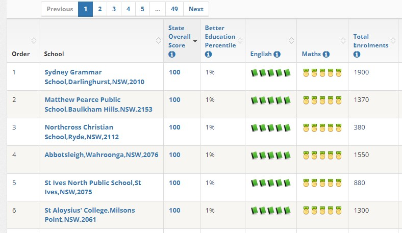
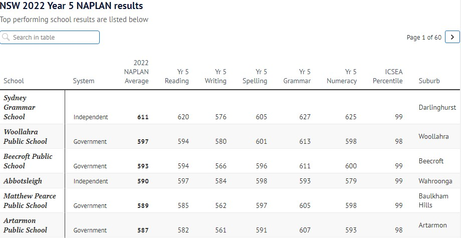
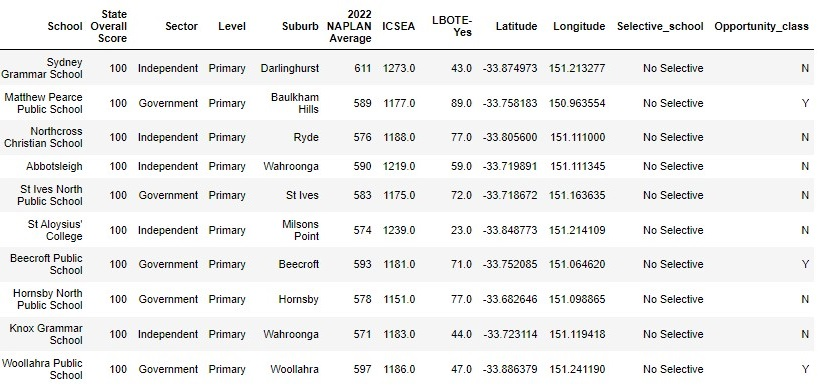
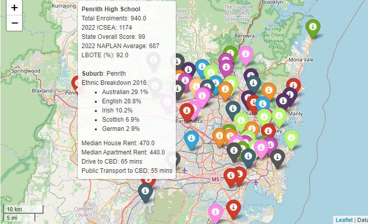

Analysis of Sydney top performing schools
1. Background
I created this project to help one of my ex-Uni friends in choosing a suitable school in Sydney for his children. This project first scraps and collects school data from various webpages and open data sources in Sydney. Then I do various analyses regarding school ranking factors. Lastly, I created heatmaps for top performing schools and an interactive marker map which can help to locate schools online.
2. Dataset introduction
Data sources used in this project include:
- List of schools and State overall scores: Better Education Pty Ltd.
- NAPLAN score, School ICSEA, LBOTE, School profile and geographic locations: Australian Curriculum, Assessment and Reporting Authority (ACARA).
- List of selective schools, opportunity classes: NSW Data Hub
- Sydney Suburb characteristics: Sydney Suburb Review
This project is subject to being bound by the terms and copyright statements to use the data sources from the organization and associations listed above. This derivative work is for personal, non-commercial education and information purposes only. Before relying on the figure in any important matter, users should carefully evaluate the source, accuracy, completeness, and relevance of the information.
3. Data collection and preparation
3.1 Data collection
Python package Selenium is used to scrap list of Sydney top primary schools and secondary schools from Better Education website, 2022 NAPLAN Year 5 and Year 9 Average Scores from ACARA and Myschools. Other data sources including school profiles, geographic locations, selective schools and opportunity classes can be downloaded directly from ACARA Data Access Program and NSW Data Hub.
The data sample for this project includes top performing schools with State Overall Score from 90 to 100 (480 primary and 189 secondary) in Sydney. These schools are categorized into Government, Independent and Catholic sectors. There are 81 of these schools run on both primary and secondary level.
Screenshot of top performing primary schools from Better Education
{kind=link}
Screenshot of 2022 Year 5 NAPLAN Average scores by schools
{kind=link}
3.2 Data cleaning and feature engineering
In this part, this project first to combine primary schools and secondary schools in to 1 dataset, then merge with NAPLAN Scores, ICSEA index, LBOTE percentage , selective schools, opportunity classes and geographic locations (latitude and longitude). For any school missing location, I used Geocoder/Geopy library to impute longitude and latitude on each given school name.
Example of pre-processed school dataset
{kind=link}
4. Explanatory Data Analysis and Visualization
In this section, I try to answer the most concerning questions regarding the selecting a right school. Various analyses of the school data, ranking facros including State Overall Score, 2022 NAPLAN etc. can be found in the Github link below. Plotly Python library is used to mark bar charts, histograms and the scatter plots.
4.1 Is that students who come from schools with more social-educational advantage, the more likely that they do better at school?
The figures below show the correlation between published 2022 ICSEA and student performance through the NAPLAN Year 5 and Year 9 Average score, respectively. The R2 (0.235) in Figure 1 suggests a weak relationship between these two factors, while in Figure 2, R2 (0.454) is a moderate correlation. In both cases, the p-values for the coefficient are less than 5%. In other words, it is not very strong to conclude that schools with high ICSEA scores, their students are more likely to outperform compared with the lower ones.


4.2 Public schools do as well as private schools?
Figure below shows the NAPLAN Year 5 and Year 9 Average across the quartile range of ICSEA values, which is from 939 to 1,273. For primary, Independent (or private) schools seems to outperform both Government and Catholic schools for across the quartiles but not so much significant. For secondary, starting from the last two quartiles of ICSEA, Government schools are significantly above Independent schools, and no Catholic schools in this ICSEA range. So, the often-presumed superiority of high-fee private institutions over public schools is it a myth?

4.3 LBOTE students are outperforming their native English speaker peers in NAPLAN?
Figure 5 shows that there is no significant difference between the schools with more or less proportion of LBOTE background. One interesting thing is there are only 14 primary schools in the sample having LBOTE less than 10%. Figure 6 has a similar situation except for several schools with high LBOTE achieving top NAPLAN score. As we know, the LBOTE community is pretty diverse, and more talents come from many backgrounds and countries.


5. Heatmaps and interactive shareable marker map
In this part, I used Python Folium library to create heatmaps for top schools ranked with State Overall Score, 2022 NAPLAN Average and School ICSEA. These screenshots below are the heatmaps of schools using the ranking of 2022 NAPLAN Average.
Heatmap of top performing primary schools

Heatmap of top performing secondary schools

Interactive marker map
{kind=link}
I used Streamlit to publish the marker map (also created by Folium) into a shareable webpage which can be accessed from this link From this ad-hoc page, users can provide several options for searching schools and the map will show all the schools meet these criteria togher with some insights of suburb characteristics.
6. Conclusion
Finding the right school for children is challenging, but thankfully, there are many reliable sources for parents to consider. In my opinion, if you are on the fence of making this decision for your child’s education, I would suggest taking a look at other factors rather than sole relying on NAPLAN scores or other assessment tool mentioned above
There are many things we need to keep our eyes on, such as school location, how it is close to where your family lives and public transport, how you commute to your workplace if you live in the school catchment zone, and whether is it safe for your kids to walk home alone if you cannot pick them up. This is simply to visit a school, speak to the teachers, book a tour, or join school open days. Looking around the community and culture of the school suburb. I hope this small piece of work can help my friend to find the right school for his little ones.